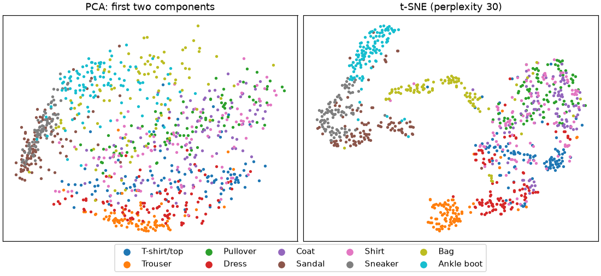
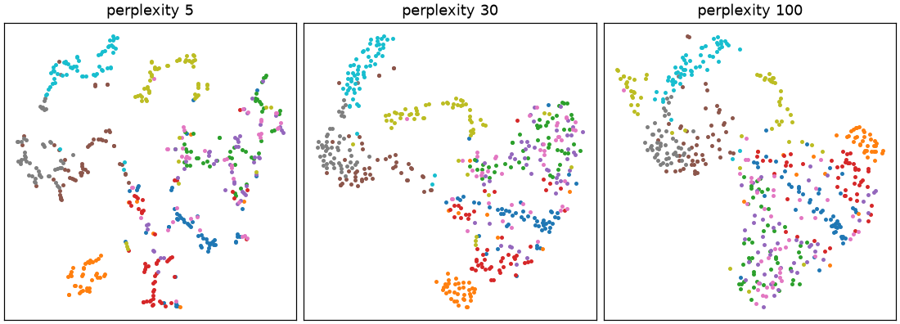
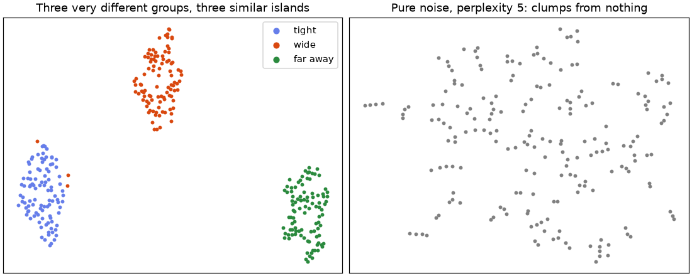
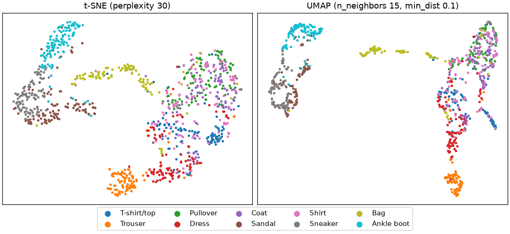
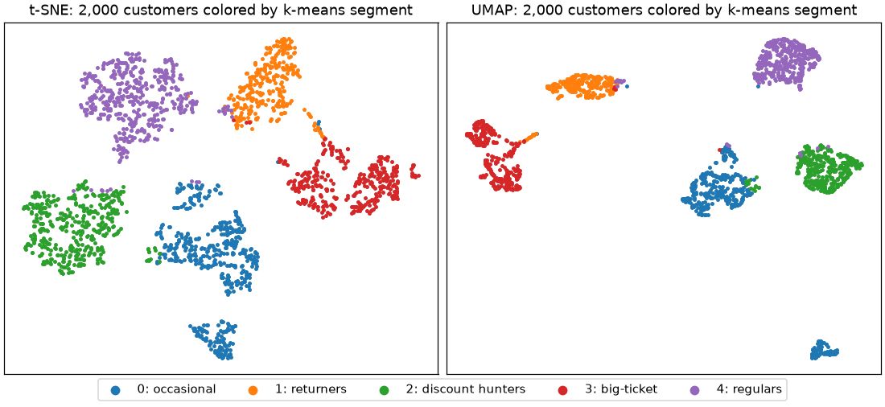

🗺️ Lesson 9.3: t-SNE and UMAP
Draw thousands of images or customers as one revealing map, then learn the discipline that keeps a beautiful picture from telling you things that are not true.
🎯 Learning Objectives
By the end of this lesson, you will be able to:
- Explain how t-SNE and UMAP differ from PCA: they keep each point's neighbors close instead of keeping straight-line spread
- Build t-SNE and UMAP maps with scikit-learn and
umap-learn, and describe the effect ofperplexity,n_neighborsandmin_dist - State what a t-SNE or UMAP map cannot show (cluster sizes, distances between clusters) and demonstrate it
- Check a map with numbers: neighbors kept, trustworthiness and silhouette in the original space
- Use UMAP's
transformto place new rows on an existing map, and explain why t-SNE cannot
In This Lesson
🪑 Keep the Neighbors, Bend the Rest
PCA and LDA flatten data along straight lines. That works when the important structure is straight, but many datasets are curved or clumpy: images of sneakers form one cloud, images of ankle boots another, and the clouds bend through 784 pixel dimensions in ways no single flat view can show. t-SNE (t-distributed stochastic neighbor embedding) and UMAP (uniform manifold approximation and projection) give up on straight lines. They try to keep only one thing: who is near whom.
💡 Mental Model: The Seating Chart
You are seating 1,000 wedding guests in one big hall, and the only rule is: people should sit near the people they know best. You will end up with tables of friends and families, and that part of the chart is meaningful. But the hall is flat and your only goal was "friends together", so the chart says nothing reliable about how far one table is from another, and a big family does not get a bigger table, just more chairs squeezed in. t-SNE and UMAP produce exactly this kind of chart for data.
How t-SNE does it, in words: for every point it turns distances in the original space into "how likely is this other point to be my neighbor" probabilities, with a bell curve whose width adapts to how crowded the area is. It then places points on a flat map and moves them until map-neighbor probabilities, computed with a heavier-tailed curve, match the original ones as closely as possible. The heavy tail lets dissimilar points drift far apart on the map, which is why t-SNE pictures show crisp, separated islands. UMAP follows the same spirit with a different recipe: it builds a graph connecting each point to its nearest neighbors, then lays the graph out flat, pulling connected points together and pushing others apart.
🤔 Why This Matters
A good map is one of the fastest ways to understand a dataset: does it have groups, are the labels clean, are there odd points between groups? You will see these maps in papers, dashboards and sales decks. Knowing how to make them is useful; knowing how to read them without being fooled is essential, because they are the most over-interpreted pictures in data science.
👕 A First t-SNE Map
Fashion-MNIST has 28 by 28 grayscale pictures of ten kinds of clothing. Each image is a row of 784 pixel values. Load the test images with torchvision (the same dataset Lesson 10.3 uses for a neural network) and take a random 1,000 of them. The seeded generator picks the same 1,000 every time, so your output matches the page.
import numpy as np
import pandas as pd
import matplotlib.pyplot as plt
from torchvision import datasets
fashion = datasets.FashionMNIST("data", train=False, download=True)
images = fashion.data.numpy().reshape(len(fashion), -1) / 255
labels = fashion.targets.numpy()
class_names = fashion.classes
rng = np.random.default_rng(42)
pick = rng.choice(len(images), size=1000, replace=False)
img, lab = images[pick], labels[pick]
print(img.shape, img.min(), img.max())
print(class_names)
print(np.bincount(lab))Output
(1000, 784) 0.0 1.0
['T-shirt/top', 'Trouser', 'Pullover', 'Dress', 'Coat', 'Sandal', 'Shirt', 'Sneaker', 'Bag', 'Ankle boot']
[102 90 88 101 99 103 106 100 102 109]The standard recipe is to reduce to about 50 dimensions with PCA first (it removes pixel noise and makes t-SNE much faster), then run t-SNE. The labels are never given to either method; they are only used afterward to color the picture.
from sklearn.decomposition import PCA
from sklearn.manifold import TSNE
pca50 = PCA(n_components=50, random_state=42).fit(img)
img50 = pca50.transform(img)
pca2 = img50[:, :2] # the first two principal components
tsne = TSNE(n_components=2, perplexity=30, random_state=42)
emb_tsne = tsne.fit_transform(img50)
print(emb_tsne.shape, "KL divergence:", round(tsne.kl_divergence_, 3))
def draw(ax, emb, title):
for k, name in enumerate(class_names):
ax.scatter(emb[lab == k, 0], emb[lab == k, 1], s=6, color=plt.cm.tab10(k), label=name)
ax.set_title(title)
ax.set_xticks([])
ax.set_yticks([])
fig, axes = plt.subplots(1, 2, figsize=(10, 4.6), layout="constrained")
draw(axes[0], pca2, "PCA: first two components")
draw(axes[1], emb_tsne, "t-SNE (perplexity 30)")
fig.legend(*axes[1].get_legend_handles_labels(), loc="outside lower center", ncol=5, markerscale=3)
plt.show()Output (yours may vary slightly)
(1000, 2) KL divergence: 0.676
PCA already sorts footwear from tops, because that is the biggest source of pixel variance. t-SNE goes further: trousers, bags, sandals, sneakers and ankle boots each get their own island, even though t-SNE never saw a label. Look at what stays mixed: shirts, pullovers and coats, with T-shirts and dresses close by. That is not a failure. These garments genuinely look alike at 28 by 28 pixels, and a classifier will confuse them too. A map that is honest about overlap is more useful than one that hides it.
⚠️ Seeds and Speed
t-SNE starts from a layout and improves it step by step; random_state=42 makes the run repeatable on your machine. The map is the end of a long numerical optimization, so another computer's math libraries can print slightly different digits even with the same seed (the cards say "yours may vary slightly"); the shape of the map and the conclusions should not change. Run time grows quickly with the number of rows: seconds for 1,000 images, many minutes for 50,000 on a laptop. This lesson keeps samples small so everything runs in a few minutes on a CPU; for a full dataset, sample, or use a faster implementation such as the openTSNE library (CPU) or RAPIDS cuML (GPU).
🎚️ Perplexity: How Many Neighbors Count
t-SNE's main setting is perplexity, roughly the number of neighbors each point pays attention to. Small values focus on very local detail; large values take in broader structure. Typical values are 5 to 50, and it must be smaller than the number of rows. Compare three values on 500 of the images:
small50, small_lab = img50[:500], lab[:500]
sweep = {}
fig, axes = plt.subplots(1, 3, figsize=(10, 3.6), layout="constrained")
for ax, perp in zip(axes, [5, 30, 100]):
emb = TSNE(perplexity=perp, random_state=42).fit_transform(small50)
sweep[perp] = emb
for k in range(10):
ax.scatter(emb[small_lab == k, 0], emb[small_lab == k, 1], s=5, color=plt.cm.tab10(k))
ax.set_title(f"perplexity {perp}")
ax.set_xticks([])
ax.set_yticks([])
print(f"perplexity {perp:3d}: map spans {np.ptp(emb[:, 0]):.0f} by {np.ptp(emb[:, 1]):.0f} units")
plt.show()Output (yours may vary slightly)
perplexity 5: map spans 132 by 115 units
perplexity 30: map spans 47 by 57 units
perplexity 100: map spans 19 by 19 units
At perplexity 5 each point listens only to a handful of neighbors, so the map breaks into many small clumps, some of which mean nothing. At 100 the groups run together into one continuous layout and some separation disappears. The printed spans show another thing: the scale of a t-SNE map changes with its settings, so the axis numbers have no units you can interpret. Always look at more than one perplexity before believing a structure.
🔍 What a Map Cannot Tell You
The seating chart warned you about sizes and distances. Here is the proof. Make three groups where you know the truth: a very tight group, a wide group six units away from it, and a medium group thirty units from the others.
from sklearn.datasets import make_blobs
blob_X, blob_y = make_blobs(n_samples=[100, 100, 100], centers=[[0, 0], [6, 0], [30, 0]],
cluster_std=[0.3, 2.0, 1.0], random_state=42)
blob_emb = TSNE(perplexity=30, random_state=42).fit_transform(blob_X)
def spread(Z, g):
return Z[blob_y == g].std(axis=0).mean()
def gap(Z, g1, g2):
return np.linalg.norm(Z[blob_y == g1].mean(axis=0) - Z[blob_y == g2].mean(axis=0))
print("spread of each group original:", " ".join(f"{spread(blob_X, g):.2f}" for g in range(3)),
" map:", " ".join(f"{spread(blob_emb, g):.2f}" for g in range(3)))
print(f"gap A-B vs B-C original: {gap(blob_X, 0, 1):.1f} vs {gap(blob_X, 1, 2):.1f}"
f" map: {gap(blob_emb, 0, 1):.1f} vs {gap(blob_emb, 1, 2):.1f}")Output (yours may vary slightly)
spread of each group original: 0.28 1.96 0.99 map: 3.04 4.48 3.08
gap A-B vs B-C original: 6.3 vs 23.7 map: 31.9 vs 41.1In the original data the wide group is about seven times as spread out as the tight one; on the map their sizes differ by less than a factor of 1.5. In the original, the third group is almost four times farther away than the first two are from each other; on the map the two gaps differ by about a third. t-SNE adapts its bell curve to local density, which equalizes cluster sizes, and its heavy tails push all groups apart by similar amounts. UMAP behaves similarly, though it often keeps a little more of the global layout.
The opposite trap is worse: structure that is not there. Run t-SNE with a low perplexity on pure random noise, data with no groups at all:
noise = rng.normal(size=(200, 10))
noise_emb = TSNE(perplexity=5, random_state=42).fit_transform(noise)
fig, axes = plt.subplots(1, 2, figsize=(10, 4), layout="constrained")
for k, color in enumerate(["#667eea", "#d9480f", "#2b8a3e"]):
axes[0].scatter(*blob_emb[blob_y == k].T, s=8, color=color, label=["tight", "wide", "far away"][k])
axes[0].set_title("Three very different groups, three similar islands")
axes[0].legend(markerscale=2)
axes[1].scatter(*noise_emb.T, s=8, color="gray")
axes[1].set_title("Pure noise, perplexity 5: clumps from nothing")
for ax in axes:
ax.set_xticks([])
ax.set_yticks([])
plt.show()
print("rows of pure noise mapped:", len(noise_emb))Output
rows of pure noise mapped: 200
🛑 The Rules for Reading t-SNE and UMAP Maps
- Neighbors are meaningful: points close together on the map are usually similar in the data.
- Cluster sizes are not: a big island is not a more varied group.
- Distances between clusters are not, or only roughly: do not say "group A is closer to B than to C" from the map.
- Axes have no meaning: no units, no direction, no loadings. Never label them "income" or "risk".
- Clusters must be validated in the original data (silhouette, profiles, stability across settings), never by eye on the map alone.
📏 Checking a Map with Numbers
Since the eye is easy to fool, measure what the map is supposed to preserve: neighborhoods. A direct check: for each point, take its 10 nearest neighbors in the original space and count how many are also among its 10 nearest neighbors on the map. scikit-learn's trustworthiness is a related score from 0 to 1 that penalizes map-neighbors that were far apart in the original data.
from sklearn.neighbors import NearestNeighbors
from sklearn.manifold import trustworthiness
def neighbors_kept(original, embedded, k=10):
"""Average share of each point's k nearest original neighbors that are also map neighbors."""
nn_orig = NearestNeighbors(n_neighbors=k + 1).fit(original).kneighbors(original, return_distance=False)[:, 1:]
nn_emb = NearestNeighbors(n_neighbors=k + 1).fit(embedded).kneighbors(embedded, return_distance=False)[:, 1:]
return np.mean([len(set(a) & set(b)) / k for a, b in zip(nn_orig, nn_emb)])
for name, emb in [("PCA (2 components)", pca2), ("t-SNE", emb_tsne)]:
print(f"{name:20s} neighbors kept {neighbors_kept(img50, emb):.3f}"
f" trustworthiness {trustworthiness(img50, emb, n_neighbors=10):.3f}")Output (yours may vary slightly)
PCA (2 components) neighbors kept 0.235 trustworthiness 0.923
t-SNE neighbors kept 0.599 trustworthiness 0.988t-SNE keeps several times more of each image's true neighbors than the two-component PCA view, which is exactly what it was built to do. A second useful check is whether the labels you care about form neighborhoods: train a k-nearest-neighbors classifier on the map coordinates with cross-validation. It is a check of the picture, not a model you would deploy.
from sklearn.neighbors import KNeighborsClassifier
from sklearn.model_selection import cross_val_score
for name, emb in [("PCA (2 components)", pca2), ("t-SNE", emb_tsne)]:
acc = cross_val_score(KNeighborsClassifier(n_neighbors=10), emb, lab, cv=5).mean()
print(f"{name:20s} kNN accuracy on the map {acc:.3f}")Output (yours may vary slightly)
PCA (2 components) kNN accuracy on the map 0.543
t-SNE kNN accuracy on the map 0.723On the t-SNE map, a point's neighbors usually share its class; on the PCA view, far less often. (The t-SNE map was computed from all 1,000 images at once, so this is a description of the picture, not an honest model score: t-SNE cannot be fitted on training folds and applied to test folds, as you will see.)
🌐 UMAP
UMAP comes from the umap-learn package (in the course's requirements.txt), and it follows the scikit-learn estimator API. Its two main settings: n_neighbors (default 15), how many neighbors define the local structure, playing a role like perplexity; and min_dist (default 0.1), how tightly points may pack on the map, small for crisp clumps and large for an even spread. Importing it takes a few seconds the first time, because it compiles its fast routines.
import umap
reducer = umap.UMAP(n_neighbors=15, min_dist=0.1, random_state=42)
emb_umap = reducer.fit_transform(img50)
print(emb_umap.shape)
print(f"neighbors kept {neighbors_kept(img50, emb_umap):.3f}"
f" trustworthiness {trustworthiness(img50, emb_umap, n_neighbors=10):.3f}")
fig, axes = plt.subplots(1, 2, figsize=(10, 4.6), layout="constrained")
draw(axes[0], emb_tsne, "t-SNE (perplexity 30)")
draw(axes[1], emb_umap, "UMAP (n_neighbors 15, min_dist 0.1)")
fig.legend(*axes[1].get_legend_handles_labels(), loc="outside lower center", ncol=5, markerscale=3)
plt.show()Output (yours may vary slightly)
(1000, 2)
neighbors kept 0.519 trustworthiness 0.981
min_dist), not a measurement.UMAP keeps slightly fewer exact nearest neighbors than t-SNE here, which is typical: t-SNE concentrates hardest on the most local structure, while UMAP trades a little of it for speed and a bit more global layout. UMAP's numeric output depends on low-level math libraries, so another computer can print slightly different digits even with the same seed; the shape of the map should be the same. With random_state set, UMAP runs on a single core so that results are repeatable; leave the seed out and it uses all cores, faster but different every time.
➕ Placing New Rows on an Existing Map
The practical difference that matters most: a fitted UMAP has a transform method. You can fit the map once and place new rows on it later, which t-SNE cannot do. Take 500 test images the map has never seen, transform them, and see whether a neighbors classifier trained on the map's coordinates recognizes them:
rest = np.setdiff1d(np.arange(len(images)), pick)
new_pick = rng.choice(rest, size=500, replace=False)
new_umap = reducer.transform(pca50.transform(images[new_pick]))
knn_on_map = KNeighborsClassifier(n_neighbors=10).fit(emb_umap, lab)
print("new rows placed:", new_umap.shape)
print(f"accuracy on 500 new images: {knn_on_map.score(new_umap, labels[new_pick]):.3f}")Output (yours may vary slightly)
new rows placed: (500, 2)
accuracy on 500 new images: 0.690About 69% of the new images land among their own kind: close to what the neighbor check found for the t-SNE map, and far better than the 54% of the PCA view. Note that the new images go through the same fitted PCA (pca50) before UMAP, exactly like the original 1,000. In real work, put both steps in a Pipeline (make_pipeline(PCA(50), umap.UMAP(...))) and call transform on the pipeline, so the order can never be forgotten.
⚖️ PCA, t-SNE or UMAP?
| Question | PCA | t-SNE | UMAP |
|---|---|---|---|
| Keeps | Straight-line spread (global) | Local neighborhoods | Local neighborhoods, some global layout |
| Axes mean something? | Yes: loadings | No | No |
New rows (transform) | Yes | No | Yes |
| Deterministic | Yes | With a seed | With a seed (then single-core) |
| Speed on large data | Very fast | Slowest | Fast |
| Main settings | n_components | perplexity | n_neighbors, min_dist |
| Use for model features? | Yes, in a pipeline | No | Sometimes, in a pipeline, with care |
✅ A Sensible Default Workflow
Scale tabular features. Run PCA first: it is fast, interpretable, and its scree plot tells you how much structure is straight. For a picture of clumpy or curved structure, run UMAP or t-SNE on the PCA output (about 50 components for wide data), try two or three settings, check the map with neighbor scores, and confirm any "cluster" you see with a clustering method and profiles in the original space (Module 8).
⚠️ Common Mistakes
1. Calling transform on t-SNE
tsne.transform(img50[:5])Error
AttributeError: 'TSNE' object has no attribute 'transform'What it means: t-SNE optimizes the positions of the rows it was given; there is no learned function that maps a new row to the picture. That also means it cannot go in a Pipeline before a model. Fix: rerun fit_transform on old and new rows together (the whole layout changes), or use UMAP or PCA when you need to place new rows.
2. Perplexity Too Large for the Data
TSNE(perplexity=30, random_state=42).fit_transform(img50[:20])Error
ValueError: perplexity (30) must be less than n_samples (20)What it means: each point cannot pay attention to 30 neighbors when there are only 20 rows. Fix: use a smaller perplexity for small samples (a common rule of thumb keeps it well below a third of the rows), or use more rows.
3. Surprised by UMAP's Warning
Every time you fit UMAP with a seed, it prints a warning. This code catches it so you can read it:
import warnings
with warnings.catch_warnings(record=True) as caught:
warnings.simplefilter("always")
umap.UMAP(random_state=42).fit(img50[:300])
print(caught[0].category.__name__)
print(caught[0].message)Output
UserWarning
n_jobs value 1 overridden to 1 by setting random_state. Use no seed for parallelism.What it means: nothing is wrong. UMAP is telling you that a fixed seed forces it onto one core so results can be repeated. Fix: keep the seed while learning and when results must be reproducible; drop it for speed on big data, and accept that each run's layout differs.
4. Mapping Unscaled Business Columns
t-SNE and UMAP start from distances, so columns in large units dominate, exactly as in PCA. Map 300 customers from four behavior columns, once raw and once scaled, and check how many of each customer's 10 nearest neighbors in the scaled data survive on each map:
from sklearn.preprocessing import StandardScaler
shoppers = pd.read_csv("data/customers_churn.csv").sample(300, random_state=42)
behavior = shoppers[["orders_12m", "avg_order_value", "discount_share", "return_rate"]]
behavior_scaled = StandardScaler().fit_transform(behavior)
raw_map = TSNE(random_state=42).fit_transform(behavior)
scaled_map = TSNE(random_state=42).fit_transform(behavior_scaled)
print(f"map of raw columns: neighbors kept {neighbors_kept(behavior_scaled, raw_map):.3f}")
print(f"map of scaled columns: neighbors kept {neighbors_kept(behavior_scaled, scaled_map):.3f}")Output (no error, and that is the problem)
map of raw columns: neighbors kept 0.201
map of scaled columns: neighbors kept 0.739What happened: on the raw columns, avg_order_value (in dollars) swamps the two fractions, so the raw map mostly sorts customers by order value and neighbors in discount use and returns are lost. Both maps look like plausible pictures; only the number reveals that one of them ignores half the columns. Fix: scale tabular features first (and consider a log for skewed amounts), as for PCA and k-means.
🛠️ Project: The Customer Map
In Lesson 8.2 you found behavior segments in Pinecrest's customers with k-means. The marketing team now wants a picture they can show: every customer as a dot, colored by segment, with new customers placed on the same map as they arrive. You will draw the map with t-SNE and UMAP, check it with numbers instead of trusting the picture, and place the remaining customers with UMAP's transform. Work in a new notebook called lesson_9_3_project. Allow about 45 minutes.
🛠️ Step 1: Build and scale the behavior features (5 min)
Use the four behavior columns from Lesson 8.2, with a log for the two skewed ones, and scale them.
import numpy as np
import pandas as pd
import matplotlib.pyplot as plt
from sklearn.preprocessing import StandardScaler
customers = pd.read_csv("data/customers_churn.csv")
behavior = pd.DataFrame({
"log_orders": np.log1p(customers["orders_12m"]),
"log_avg_order_value": np.log(customers["avg_order_value"]),
"discount_share": customers["discount_share"],
"return_rate": customers["return_rate"],
})
scaled = StandardScaler().fit_transform(behavior)
print(scaled.shape, scaled.mean(axis=0).round(3), scaled.std(axis=0).round(3))Output
(6000, 4) [ 0. 0. -0. -0.] [1. 1. 1. 1.]🛠️ Step 2: Find the segments in the original space (5 min)
Cluster first, in the four scaled dimensions, never on the map. Then profile each segment with the raw columns.
from sklearn.cluster import KMeans
from sklearn.metrics import silhouette_score
kmeans = KMeans(n_clusters=5, n_init=10, random_state=42).fit(scaled)
segment = kmeans.labels_
print(f"silhouette in the 4-D space: {silhouette_score(scaled, segment):.3f}")
cols = ["orders_12m", "avg_order_value", "discount_share", "return_rate", "churned"]
profile = customers.groupby(segment)[cols].mean()
profile.insert(0, "customers", np.bincount(segment))
print(profile.round(2))Output
silhouette in the 4-D space: 0.479
customers orders_12m avg_order_value discount_share return_rate churned
0 1453 1.97 95.51 0.14 0.06 0.20
1 815 6.35 167.11 0.18 0.28 0.10
2 1249 5.41 64.16 0.51 0.08 0.31
3 1113 2.50 331.79 0.11 0.05 0.16
4 1370 9.12 88.41 0.10 0.04 0.04Five recognizable groups: occasional shoppers (segment 0), heavy returners (1), discount hunters (2, with the highest churn), big-ticket buyers (3) and frequent regulars (4, with the lowest churn). These names come from the profile table, which is the evidence; the map is only an illustration of it.
🛠️ Step 3: Map a sample with t-SNE and UMAP (10 min)
Map 2,000 customers (t-SNE gets slow with many rows, and a sample is plenty for a picture). Keep the other 4,000 for Step 5.
from sklearn.manifold import TSNE
import umap
sample = customers.sample(2000, random_state=42).index.to_numpy()
others = np.setdiff1d(customers.index.to_numpy(), sample)
map_tsne = TSNE(perplexity=30, random_state=42).fit_transform(scaled[sample])
customer_umap = umap.UMAP(n_neighbors=15, min_dist=0.1, random_state=42).fit(scaled[sample])
map_umap = customer_umap.embedding_
names = ["occasional", "returners", "discount hunters", "big-ticket", "regulars"]
fig, axes = plt.subplots(1, 2, figsize=(10, 4.6), layout="constrained")
for ax, emb, title in [(axes[0], map_tsne, "t-SNE"), (axes[1], map_umap, "UMAP")]:
for k in range(5):
mask = segment[sample] == k
ax.scatter(emb[mask, 0], emb[mask, 1], s=5, color=plt.cm.tab10(k), label=f"{k}: {names[k]}")
ax.set_title(f"{title}: 2,000 customers colored by k-means segment")
ax.set_xticks([])
ax.set_yticks([])
fig.legend(*axes[0].get_legend_handles_labels(), loc="outside lower center", ncol=5, markerscale=3)
plt.show()
print(map_tsne.shape, map_umap.shape)Output (yours may vary slightly)
(2000, 2) (2000, 2)
Look at segment 0 (occasional shoppers, blue): both maps break it into pieces, and UMAP puts one small island far from everything. That island is almost entirely customers with exactly one order in the year. orders_12m is a whole number, so customers with one order share exactly the same value of that feature and sit on a "shelf" in the data; neighbor-based maps turn such shelves into separate islands. It is a real property of the data, but not a separate customer segment, and the distance to the island means nothing. Discrete columns are a common source of convincing-looking but trivial islands.
🛠️ Step 4: Check the map with numbers (10 min)
Measure neighbor preservation, and compare the segments' silhouette on each map with their silhouette in the original space.
from sklearn.neighbors import NearestNeighbors
def neighbors_kept(original, embedded, k=10):
nn_orig = NearestNeighbors(n_neighbors=k + 1).fit(original).kneighbors(original, return_distance=False)[:, 1:]
nn_emb = NearestNeighbors(n_neighbors=k + 1).fit(embedded).kneighbors(embedded, return_distance=False)[:, 1:]
return np.mean([len(set(a) & set(b)) / k for a, b in zip(nn_orig, nn_emb)])
seg_sample = segment[sample]
print(f"silhouette, original 4-D space: {silhouette_score(scaled[sample], seg_sample):.3f}")
for name, emb in [("t-SNE", map_tsne), ("UMAP", map_umap)]:
print(f"{name:6s} neighbors kept {neighbors_kept(scaled[sample], emb):.3f}"
f" silhouette on the map {silhouette_score(emb, seg_sample):.3f}")Output (yours may vary slightly)
silhouette, original 4-D space: 0.477
t-SNE neighbors kept 0.639 silhouette on the map 0.572
UMAP neighbors kept 0.519 silhouette on the map 0.596Two lessons in four lines. First, both maps keep a good share of each customer's true neighbors, so local "who is like whom" is trustworthy. Second, the segments look more separated on the maps than they are in the data: the silhouette on each map is higher than in the original space. The picture flatters the segmentation. Report the original-space silhouette, and use the map only to illustrate.
🛠️ Step 5: Place the other 4,000 customers (10 min)
Use the fitted UMAP to put the customers it has never seen on the same map, and check that they land in their own segment's region: for each new customer, take the segment most common among its 10 nearest sample customers on the map.
from sklearn.neighbors import KNeighborsClassifier
new_points = customer_umap.transform(scaled[others])
region = KNeighborsClassifier(n_neighbors=10).fit(map_umap, seg_sample)
agree = (region.predict(new_points) == segment[others]).mean()
print("placed:", new_points.shape)
print(f"new customers landing in their own segment's region: {agree:.1%}")Output (yours may vary slightly)
placed: (4000, 2)
new customers landing in their own segment's region: 98.5%Nearly all new customers land among customers of their own segment, so the map can be extended as new customers arrive without redrawing it. With t-SNE you would have to rerun everything and get a different layout.
🛠️ Step 6: Save the map for the dashboard (5 min)
Save every customer's map position and segment, but no churn outcome: the dashboard is for exploring behavior, and a map is not a churn model.
coords = np.zeros((len(customers), 2))
coords[sample] = map_umap
coords[others] = new_points
customer_map = pd.DataFrame({
"customer_id": customers["customer_id"],
"map_x": coords[:, 0].round(3),
"map_y": coords[:, 1].round(3),
"segment": segment,
"in_fitted_sample": customers.index.isin(sample),
})
customer_map.to_csv("customer_map.csv", index=False)
print(customer_map["in_fitted_sample"].value_counts())
print("saved", len(customer_map), "rows")Output
in_fitted_sample
False 4000
True 2000
Name: count, dtype: int64
saved 6000 rows✅ Project Completion Checklist
- Your features are scaled (two of them logged), and k-means ran on the four-dimensional data, not on a map
- Your segment profile table has five rows, and you named the segments from it
- You drew t-SNE and UMAP maps of 2,000 customers colored by segment
- You reported neighbors kept and compared the silhouette on the maps with the original-space silhouette
- You placed the other 4,000 customers with UMAP's
transformand measured how many land in their own region customer_map.csvhas 6,000 rows of positions and segments and no churn column
🏋️ Hands-on Exercises
Exercises 1, 2 and 4 use the Fashion-MNIST variables from the lesson (img, lab, small50, sweep; rerun those cells if needed). Exercise 3 continues in the project notebook (scaled, sample and neighbors_kept exist).
🏋️ Exercise 1: Does the Seed Matter?
Run t-SNE on small50 three times: with the default start and random_state=1, then with init="random" and random_state=1, then with init="random" and random_state=2. For each, print the neighbors kept. Then print the correlation of the first map coordinate between the two init="random" runs. What changes between runs, and what does not?
💡 Hint
np.corrcoef(a[:, 0], b[:, 0])[0, 1]. The default start is a PCA projection, which involves no randomness at all.
✅ Solution
runs = {
"default init, seed 1": TSNE(random_state=1).fit_transform(small50),
"random init, seed 1": TSNE(init="random", random_state=1).fit_transform(small50),
"random init, seed 2": TSNE(init="random", random_state=2).fit_transform(small50),
}
for name, emb in runs.items():
print(f"{name:22s} neighbors kept {neighbors_kept(small50, emb):.3f}")
a, b = runs["random init, seed 1"], runs["random init, seed 2"]
print(f"correlation of x coordinates, random seeds 1 and 2: {np.corrcoef(a[:, 0], b[:, 0])[0, 1]:.2f}")Output (yours may vary slightly)
default init, seed 1 neighbors kept 0.643
random init, seed 1 neighbors kept 0.640
random init, seed 2 neighbors kept 0.640
correlation of x coordinates, random seeds 1 and 2: -0.05The quality is about the same for every run, but with a random start the coordinates of two runs are not comparable: the map can come out rotated, mirrored or rearranged. scikit-learn's default PCA start removes most of that run-to-run randomness, which is one reason it is the default. Either way, map axes must never be read as variables; compare maps by neighborhoods and labels, never by coordinates.
🏋️ Exercise 2: Which Perplexity Keeps Which Neighbors?
The lesson saved the three perplexity maps of small50 in sweep. For each, compute neighbors kept with k=10 and with k=50. Which perplexity preserves the 10 nearest neighbors best? Does the answer change for the 50 nearest?
💡 Hint
Loop over sweep.items() and call neighbors_kept(small50, emb, k=...) twice per map. No new t-SNE runs are needed.
✅ Solution
for perp, emb in sweep.items():
print(f"perplexity {perp:3d}: kept k=10 {neighbors_kept(small50, emb, k=10):.3f}"
f" k=50 {neighbors_kept(small50, emb, k=50):.3f}")Output (yours may vary slightly)
perplexity 5: kept k=10 0.591 k=50 0.641
perplexity 30: kept k=10 0.643 k=50 0.708
perplexity 100: kept k=10 0.591 k=50 0.730Compare the columns: which setting wins depends on which neighborhood size you care about. Perplexity is a lens, not a quality knob, so choose it for the scale of structure you want to see, and look at more than one.
🏋️ Exercise 3: min_dist
Take rows = scaled[sample[:500]], 500 customers from the project. Fit UMAP on them with min_dist=0.0 and min_dist=0.8 (both with random_state=42). For each, print neighbors kept and the average distance from each point to its nearest map neighbor. What does min_dist change?
💡 Hint
NearestNeighbors(n_neighbors=2).fit(emb).kneighbors(emb)[0][:, 1] gives each point's distance to its nearest other point.
✅ Solution
rows = scaled[sample[:500]]
for md in [0.0, 0.8]:
emb = umap.UMAP(min_dist=md, random_state=42).fit_transform(rows)
nearest = NearestNeighbors(n_neighbors=2).fit(emb).kneighbors(emb)[0][:, 1].mean()
print(f"min_dist {md}: neighbors kept {neighbors_kept(rows, emb):.3f} mean nearest-neighbor gap {nearest:.3f}")Output (yours may vary slightly)
min_dist 0.0: neighbors kept 0.605 mean nearest-neighbor gap 0.059
min_dist 0.8: neighbors kept 0.584 mean nearest-neighbor gap 0.258min_dist mostly changes how tightly points pack (look at the gap), not which points are neighbors. Small values make dense, crisp clumps that look more "clustered"; large values spread points evenly. Another reason not to read cluster tightness off a map.
🏋️ Exercise 4: UMAP Features for a Model (Stretch)
UMAP can produce more than two dimensions and sits in a pipeline. On the 1,000 Fashion-MNIST images from the lesson (img, lab; rerun those cells if needed), compare 3-fold cross-validated accuracy of k-nearest neighbors (n_neighbors=10) after PCA(50) alone and after PCA(50) then umap.UMAP(n_components=10, random_state=42). Because UMAP is inside the pipeline, each fold fits it on its training part only.
💡 Hint
make_pipeline(PCA(n_components=50, random_state=42), umap.UMAP(n_components=10, random_state=42), KNeighborsClassifier(n_neighbors=10)). Use StratifiedKFold(n_splits=3, shuffle=True, random_state=42).
✅ Solution
from sklearn.pipeline import make_pipeline
from sklearn.decomposition import PCA
from sklearn.model_selection import StratifiedKFold
cv3 = StratifiedKFold(n_splits=3, shuffle=True, random_state=42)
pca_knn = make_pipeline(PCA(n_components=50, random_state=42), KNeighborsClassifier(n_neighbors=10))
umap_knn = make_pipeline(PCA(n_components=50, random_state=42),
umap.UMAP(n_components=10, random_state=42),
KNeighborsClassifier(n_neighbors=10))
for name, pipe in [("PCA 50 + kNN", pca_knn), ("PCA 50 + UMAP 10 + kNN", umap_knn)]:
print(f"{name:24s} CV accuracy {cross_val_score(pipe, img, lab, cv=cv3).mean():.3f}")Output (yours may vary slightly)
PCA 50 + kNN CV accuracy 0.735
PCA 50 + UMAP 10 + kNN CV accuracy 0.725Read the result honestly: on this small sample UMAP features do not clearly beat plain PCA features for a neighbors classifier, and they cost much more time. UMAP features can help on some problems, but they are not a free upgrade; test them inside a pipeline, as here, and keep them only if cross-validation agrees.
🎯 Quick Quiz
🎯 Check Your Understanding
Question 1: On a t-SNE map of customers, segment A forms a large island and segment B a small one far to the left. What can you conclude?
Question 2: What does this print?
quiz_tsne = TSNE(random_state=42)
print(hasattr(quiz_tsne, "fit_transform"), hasattr(quiz_tsne, "transform"))Question 3: You need to place each day's new customers on an existing map without redrawing it. Which method fits?
Question 4: In the project, the segments' silhouette was higher on the UMAP map than in the original four-dimensional space. Which is the right conclusion?
Question 5: A t-SNE map of 200 rows at perplexity 5 shows six small clumps. What should you do before telling anyone the data has six groups?
❓ Common Questions at This Stage
Which is better, t-SNE or UMAP?
For pictures, they usually tell the same story, as they did for the images and the customers here. UMAP is faster on large data, can place new rows, and tends to keep a little more of the global arrangement; t-SNE is a long-established standard with very good local detail. Try both on your data and compare their neighbor scores. Neither one's picture is "the truth".
Can I cluster on the t-SNE or UMAP coordinates?
It is sometimes done (UMAP to about 10 dimensions, then HDBSCAN, is a known recipe for very large, curved datasets), but on a two-dimensional map you are clustering a picture that exaggerates gaps and can invent clumps. Cluster in the original (scaled) space first, as in the project, and if you do cluster on an embedding, validate the result in the original space and across several settings.
Why run PCA before t-SNE?
Two reasons. Speed: t-SNE computes many distances, and 50 columns are much cheaper than 784. Noise: the last few hundred principal components of image data are mostly noise, and dropping them makes neighborhoods cleaner. scikit-learn's TSNE also starts its layout from a PCA projection by default (init="pca"), which makes results more stable.
Is a t-SNE or UMAP map a privacy risk?
It can be. A map that shows each customer as a dot, with an ID behind it, still describes individuals, and an outlier on a map can be easy to identify. Share maps of customers the way you would share the underlying table: aggregated or anonymized where possible, and only with people who need it. That is why the project's CSV leaves out the churn outcome.
🌟 Going Further: Bonus Challenge
Make a "stability check" for the customer map. Run UMAP on the 2,000-customer sample with three different n_neighbors values (5, 15, 50) and, for each, compute neighbors kept and the silhouette of the k-means segments on the map. Then run k-means with 4 and 6 clusters in the original space and draw those labels on your favorite map. Write three sentences for the marketing team: which structure is stable across settings, which is an artifact of one setting, and how many segments the numbers in the original space support.
📓 Learning Journal
Take five minutes to write in your learning journal (the journal.md file you started in Lesson 0.1, or a paper notebook). Jot down:
- Key concepts you learned today
- Techniques that clicked (and the ones that have not, yet)
- Questions or confusion to come back to
- Ideas to try on your own
- Progress and feelings: how did this lesson go for you?
✍️ This lesson's prompt: Explain the seating chart in your own words, then write the five reading rules from the red card from memory. Which rule do you think you would have broken before this lesson? Finally, write the one number from your project you would show next to the customer map so that nobody over-reads it.
📝 Lesson Summary
🎓 Key Takeaways
- t-SNE and UMAP are nonlinear maps that keep each point's neighbors close; they reveal clumpy and curved structure that PCA's straight lines miss
perplexity(t-SNE) andn_neighbors(UMAP) set how many neighbors count;min_distsets how tightly UMAP packs points- Neighborhoods on the map are meaningful; cluster sizes, gaps between clusters and the axes are not
- Low perplexity can make clumps out of pure noise; always try several settings
- Check maps with numbers (neighbors kept, trustworthiness) and validate clusters in the original space; maps flatter separation
- Scale tabular features first, and run PCA to about 50 dimensions before t-SNE on wide data
- UMAP has
transformand can place new rows; t-SNE cannot, so it never goes in a model pipeline
🏆 What You've Accomplished
- You drew 1,000 clothing images as a map that separates garment types without ever seeing a label
- You proved, with numbers, that maps distort sizes and distances and can invent clusters
- You wrote a neighbor-preservation check and used it to catch an unscaled map
- You built t-SNE and UMAP maps of Pinecrest's customer segments and reported them honestly
- You placed 4,000 new customers on an existing map with UMAP's
transform
🔭 Looking Ahead
That completes dimensionality reduction. In Lesson 10.1: Neural Networks from Scratch you start Module 10 by building a small neural network with NumPy, one neuron at a time, and then let PyTorch's autograd compute the gradients for you. Neural networks learn their own internal representations, a learned cousin of the embeddings you made today.
📋 Before the Next Lesson
- Keep
customer_map.csv; it is a good input for your capstone's exploratory section. - Take the bonus challenge or rerun the project with
n_neighbors=50and note what changes on the map and in the numbers. - Make sure
import torchworks in your environment (Lesson 0.1), because Module 10 uses it from the first lesson.
🌱 Encouragement for the Journey
You can now make the most eye-catching pictures in machine learning, and, rarer, you know how to read them without being fooled. Most people who show t-SNE maps have never seen one invent clusters from noise; you have, and you measured it. Carry that healthy skepticism into Module 10, where models get more powerful and their outputs even more persuasive. You have earned this module's finish line.